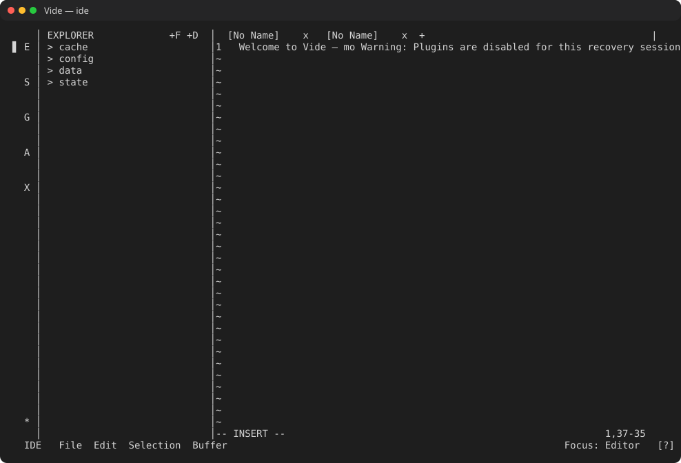
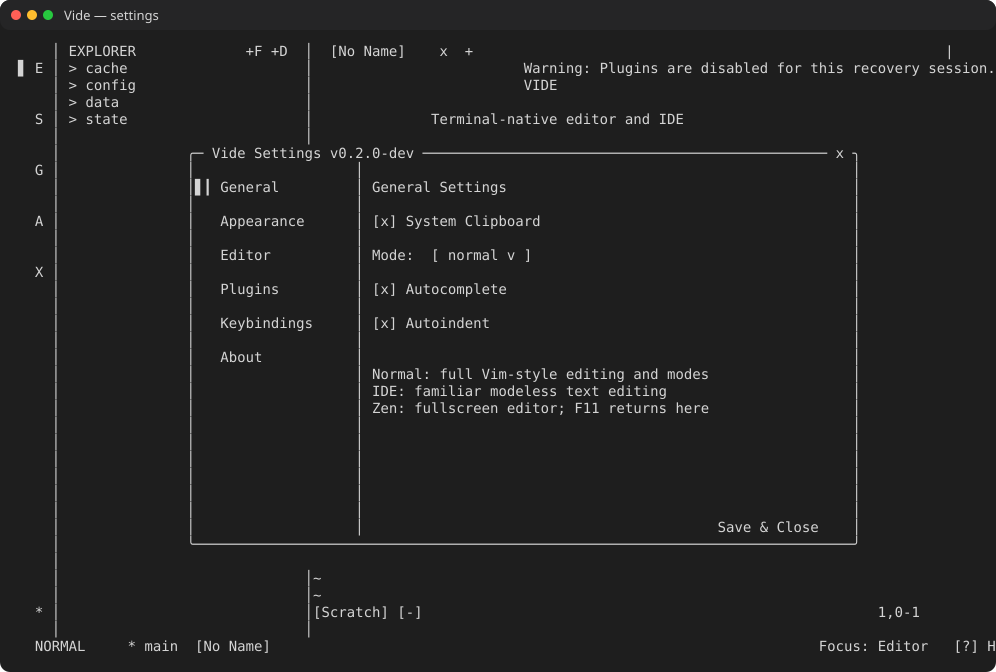

Normal
Full Vim-style modal editing surrounded by Vide’s explorer, Git, terminal, settings, and tooling panels.
Terminal-native. Neovim-powered. No Electron.
Vide combines a native Zig interface, an isolated Neovim editor, mouse-driven tools, and three editing experiences in one lightweight terminal application.
One application, three workflows
Full Vim-style modal editing surrounded by Vide’s explorer, Git, terminal, settings, and tooling panels.

Predictable modeless editing with desktop selection, clipboard, navigation, find, replace, and mouse-accessible menus.

A distraction-free Neovim viewport. Leave Zen to return to the exact Normal or IDE mode used before it.
Shipped today
Keyboard and mouse file explorer, visual buffers, split controls, search actions, and project-aware language recommendations.
Resizable terminal, debug and output panels, Git status, staging, commits, branch history, and detailed repository actions.
Bundled completion, Treesitter, LSP integration, Mason package management, diagnostics, formatting, and health reporting.
Vide never loads or rewrites the user’s unrelated system-Neovim configuration. Settings, plugins, logs, and sessions have separate XDG paths.




Play or download the short asciinema-compatible terminal recording
Installation
curl -fsSL https://raw.githubusercontent.com/Rouboufy/vide/main/setup.sh | bashChecksum-verified Linux x86-64/ARM64 and macOS Intel/Apple Silicon binaries. Requires Neovim 0.10+ on the host.
Bundles pinned Neovim 0.11.6, desktop metadata, and its own checksum. Runs without FUSE through extraction mode.
Use setup.sh --source with the pinned Zig 0.16.0 toolchain for development or unsupported targets.
Platform status and limitations
Plugins that need ownership of the outer terminal UI may be incompatible. See plugin compatibility, terminal compatibility, the complete documentation, and the public roadmap.